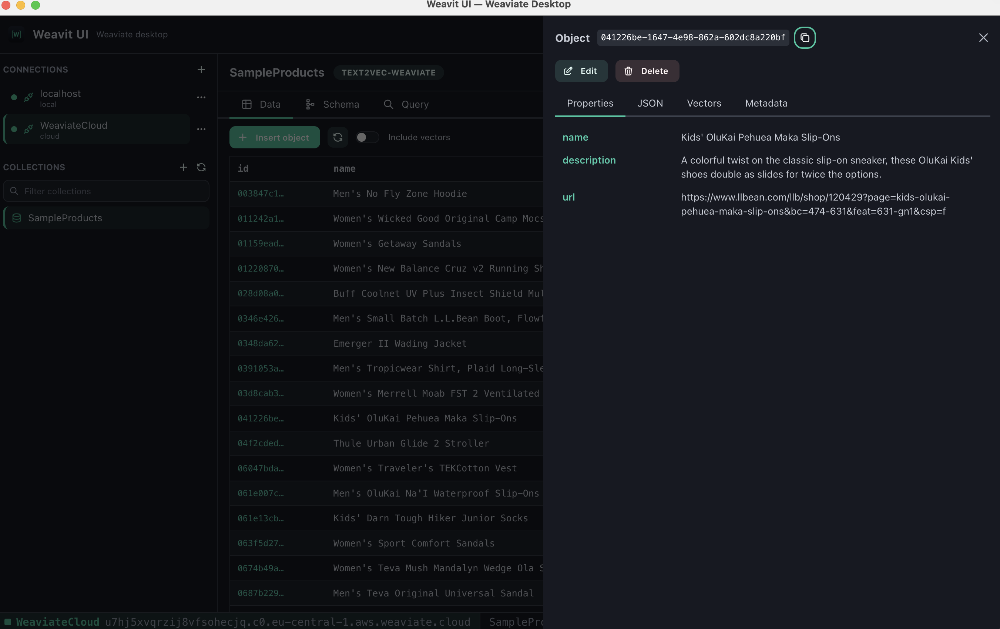
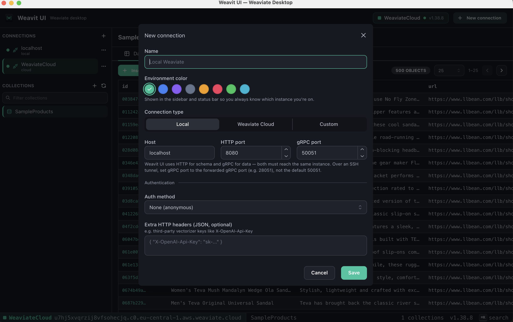
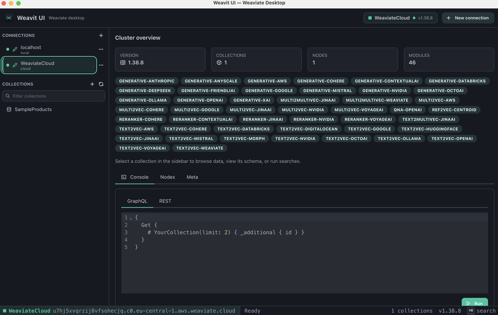

● weavit ui · v1.0.0 · apache-2.0
Weavit UI connects to any Weaviate instance — local Docker, self-hosted, or Weaviate Cloud — and gives you a real interface for it. Browse collections, read and edit objects, inspect named vectors, and run vector, keyword and hybrid searches without hand-writing GraphQL.
Every object carries an embedding. Weavit UI shows it — alongside the properties, the raw JSON, and the metadata — instead of leaving it as an opaque array behind an API call.
Screenshots



Features
Read and write. Weavit UI covers the day-to-day work of running a vector database: inspecting what got ingested, fixing a bad object, and checking that a search actually returns what you expect.
Local, Weaviate Cloud, or custom hosts with independent HTTP and gRPC endpoints. API-key or anonymous auth, plus extra headers for third-party vectorizer keys. Credentials are encrypted with your OS keychain.
Every collection in a sidebar tree, with its properties, vectorizer, vector index settings, and multi-tenancy config laid out. Create, edit and delete collections — change settings and add properties without writing a schema payload.
A paginated object browser with structured and raw-JSON views, named vector display, and a tenant selector. Insert new objects, patch existing ones by merge or replace, and delete.
nearText, nearVector, BM25 keyword, and hybrid search — with a visual filter builder, target-vector selection, and property projection. Tune a query and see results immediately.
Cluster metadata, installed modules, and per-node status. When you need to drop to the wire, the built-in GraphQL and REST console sends raw requests to the same connection.
The UI never reaches Weaviate directly. All access goes through a typed IPC bridge in the Electron main process, with context isolation on, node integration off, sandboxing enabled, and a production CSP.
Download
Free and open source under Apache-2.0. Pick your platform, or browse every asset on the GitHub releases page.
| Platform | Installer | File |
|---|---|---|
| macOS — Apple Silicon | Download .dmg | Weavit-UI-1.0.0-arm64.dmg |
| macOS — Intel | Download .dmg | Weavit-UI-1.0.0-x64.dmg |
| Windows — x64 | Download installer | Weavit-UI-1.0.0-setup.exe |
| Linux — portable | Download AppImage | Weavit-UI-1.0.0-x86_64.AppImage |
| Linux — Debian / Ubuntu | Download .deb | Weavit-UI-1.0.0-amd64.deb |
These are unsigned community builds, so your OS will flag them on first launch. On macOS, right-click the app and choose Open. On Windows, click More info → Run anyway. Prefer to build it yourself? The source and build instructions are on GitHub.
FAQ
Yes — Weavit UI. It's a free, open-source desktop GUI for Weaviate on macOS, Windows and Linux. It connects to any instance, local or cloud, and gives you a collection browser, an object editor, a vector inspector, and a search builder in one window.
Add a connection pointing at your Weaviate host, and every collection in the schema appears in the sidebar. Selecting one opens a paginated object browser: read properties, switch to raw JSON, pick a tenant on multi-tenant collections, and open any object to see its named vectors and metadata.
Yes. Local instances, Weaviate Cloud, and fully custom setups with separate HTTP and gRPC hosts and ports all work. Authenticate with an API key or anonymously, and add extra HTTP headers when your vectorizer needs a third-party key such as OpenAI or Cohere.
On your machine, encrypted at rest with your operating system's keychain through
Electron's safeStorage. Nothing is sent anywhere else — there's no account,
no sync, and no telemetry.
Nothing. Weavit UI is Apache-2.0 licensed open source with no paid tier. Contributions and bug reports are welcome on GitHub.
No. Weavit UI is an independent community project, not affiliated with, endorsed by, or sponsored by Weaviate B.V. It's built on the official weaviate-client library, but it isn't shipped or supported by them.